運行管理者ガイド¶
運行管理者向けの操作マニュアルです。
初期設定¶
ログイン¶
Google アカウントでログインします。ログイン後、ダッシュボードが表示されます。画面上部のロール切替で「運行管理者」を選択してください。
乗務員の登録¶
乗務員タブから乗務員を登録します。詳しくは本ページの「乗務員管理」を参照してください。
デバイスの登録¶
デバイス管理タブから端末を登録します。詳しくは本ページの「デバイス管理」を参照してください。
ダッシュボード¶
乗務員¶
乗務員の登録・編集・削除、顔認証の承認を管理します。
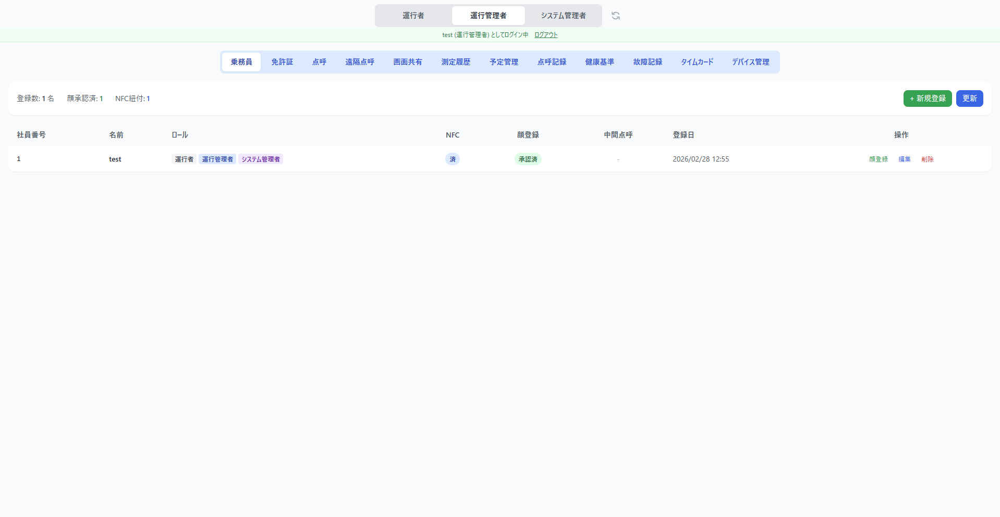
免許証¶
乗務員の運転免許証情報を管理します。NFC カードで免許証を読み取り、有効期限を管理できます。
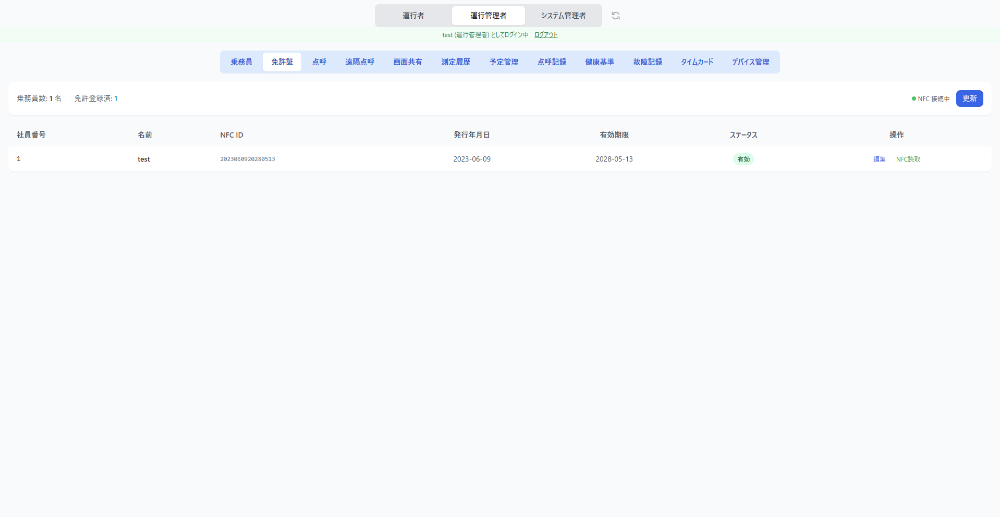
点呼¶
点呼の実施状況を管理します。
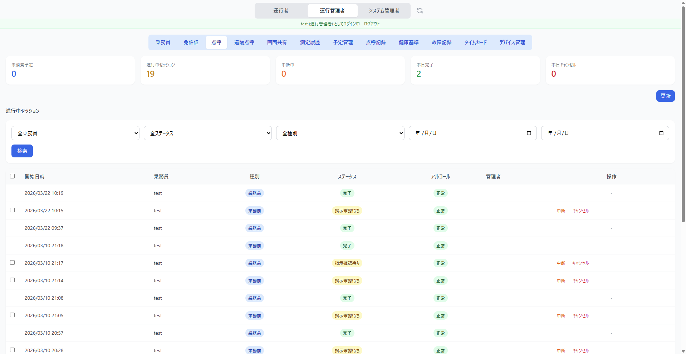
遠隔点呼¶
遠隔点呼モニターです。接続待ちデバイスを確認し、ビデオ通話を開始できます。詳しくは 遠隔点呼の実施 を参照してください。
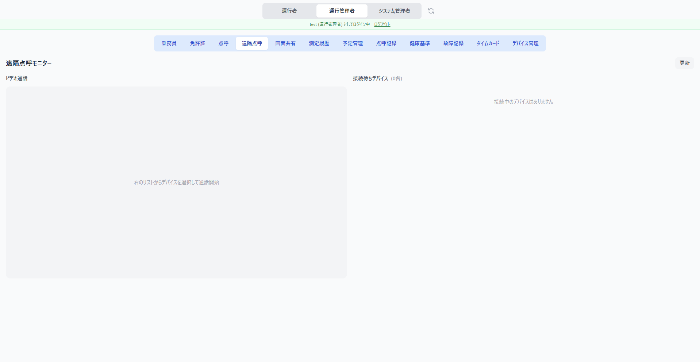
画面共有¶
端末の画面をリアルタイムで共有・確認できます。
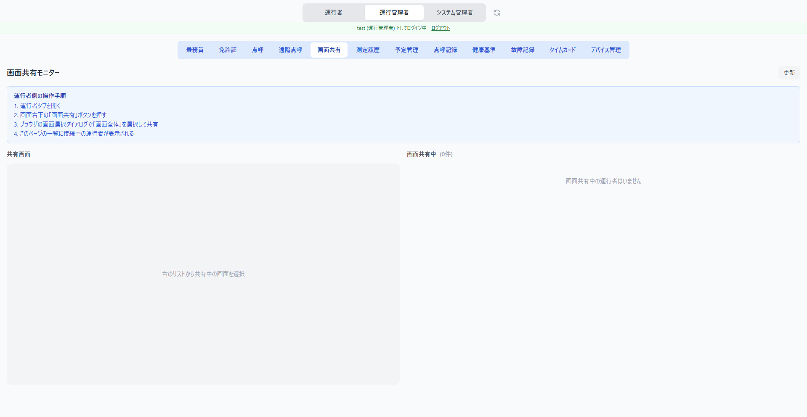
測定履歴¶
アルコール測定・バイタル測定の履歴を確認できます。
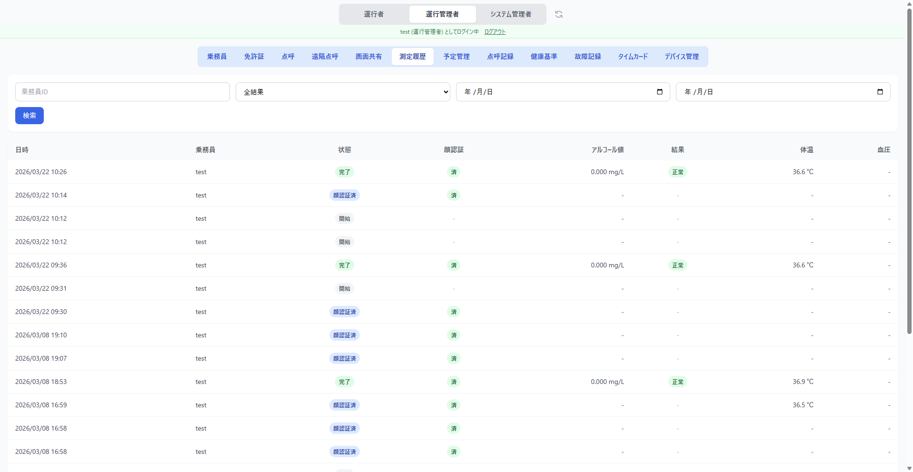
| 列 | 内容 |
|---|---|
| 日時 | 測定を実施した日時 |
| 乗務員 | 測定対象の乗務員名 |
| 状態 | 開始 / 顔認証済 / 完了 |
| 顔認証 | 済 / スキップ |
| 録画 | 済（R2にアップロード済み） / -（録画なし） |
| アルコール値 | 測定値（mg/L） |
| 結果 | 正常 / 基準超 / エラー |
| 体温 | BLE 体温計で測定した体温 |
| 血圧 | BLE 血圧計で測定した血圧 |
録画について: アルコール測定時に「息を吹きかけてください」と表示された時点から測定完了まで、端末のカメラで自動的に録画されます。録画はまず端末のローカルストレージ（IndexedDB）に保存され、バックグラウンドでサーバー（R2）にアップロードされます。ローカルの録画は7日で自動削除、サーバー側は2年間保存されます。
予定管理¶
点呼スケジュールの作成・編集・削除を行います。
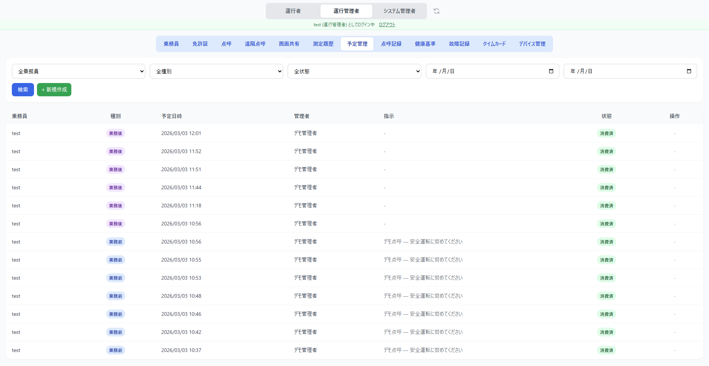
点呼記録¶
点呼の実施記録を検索・閲覧・CSV エクスポートできます。
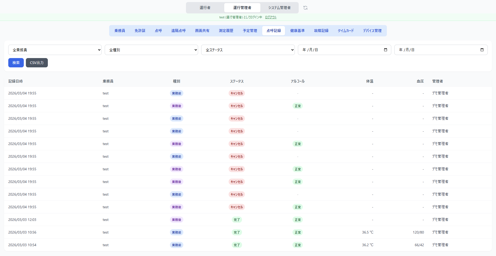
健康基準¶
乗務員の健康基準値（体温・血圧・脈拍）の閾値と許容範囲を設定します。安全運転判定に使用されます。
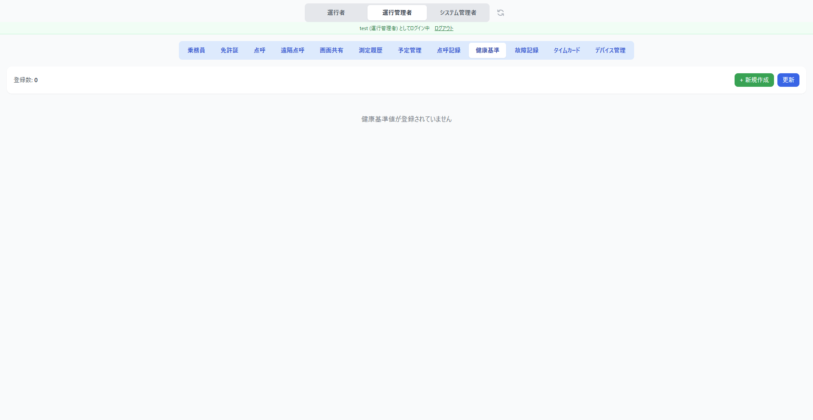
故障記録¶
測定機器の故障を記録・管理します。
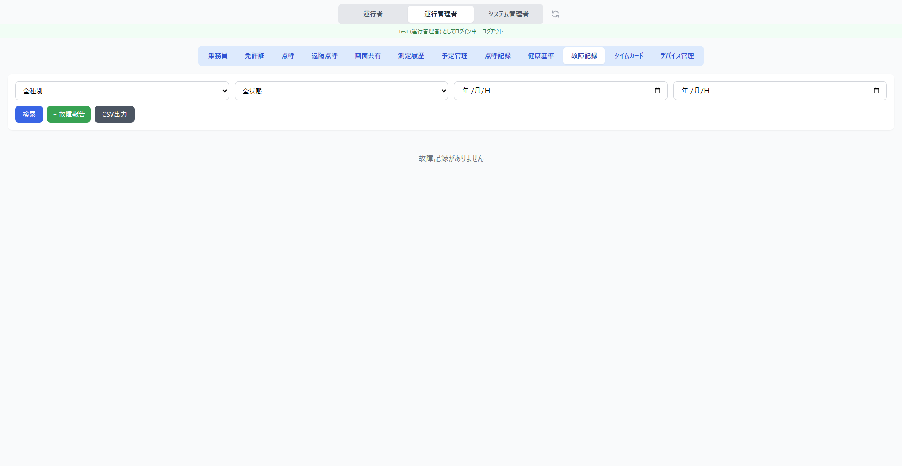
タイムカード¶
NFC カードと乗務員の紐付け、打刻履歴の確認を行います。
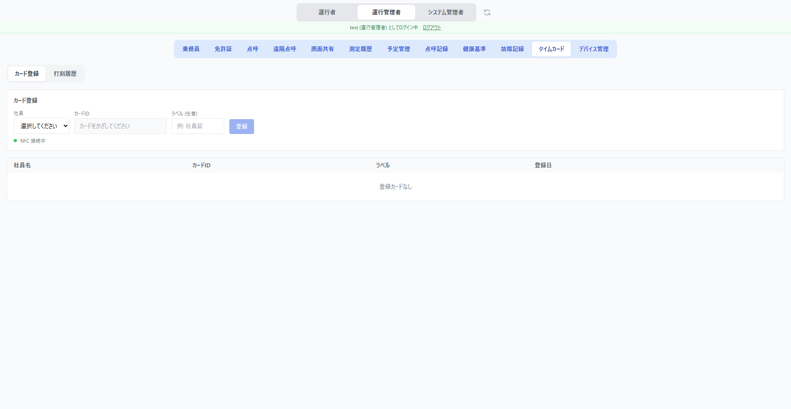
デバイス管理¶
端末の登録・承認・無効化を管理します。
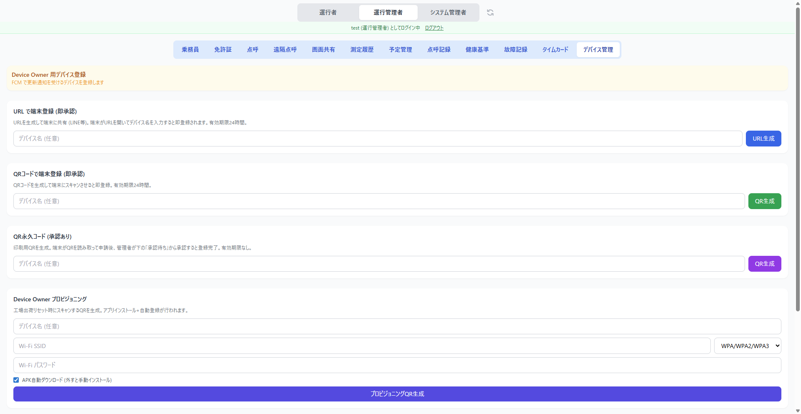
乗務員管理¶
乗務員一覧¶
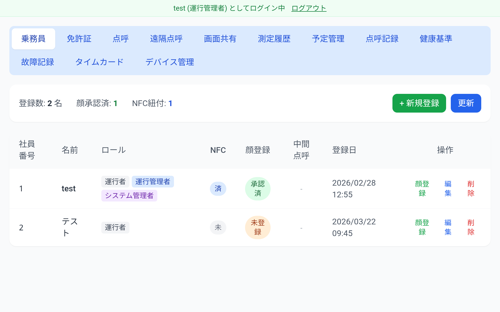
| 列 | 内容 |
|---|---|
| 社員番号 | 乗務員の社員番号 |
| 名前 | 乗務員名 |
| ロール | 運行者 / 運行管理者 / システム管理者 |
| NFC | NFC カードの紐づけ状態 |
| 顔登録 | 顔認証の登録・承認状態 |
| 中間点呼 | 中間点呼の電話番号登録状態 |
| 登録日 | 登録日時 |
| 操作 | 顔登録・編集・削除ボタン |
乗務員の登録¶
「+新規登録」ボタンをタップすると登録フォームが表示されます。
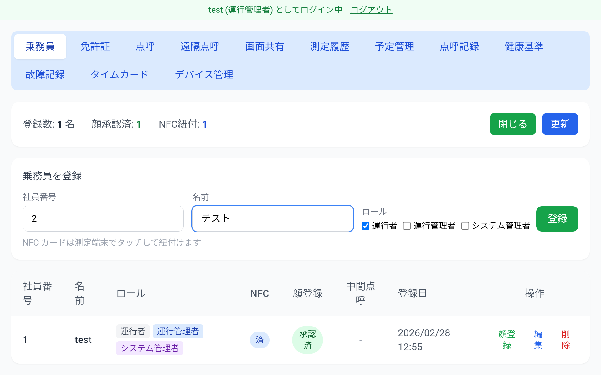
- 社員番号・名前を入力します
- ロール（運行者 / 運行管理者 / システム管理者）を選択します
- 「登録」をタップします
乗務員の編集¶
一覧の「編集」ボタンから名前・ロールを変更できます。
乗務員の削除¶
一覧の「削除」ボタンをタップすると確認が表示されます。
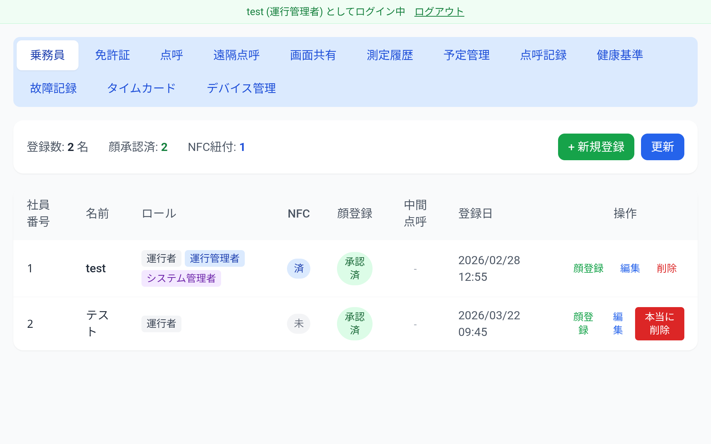
「本当に削除」をタップすると乗務員が削除されます。
顔認証の登録状況¶
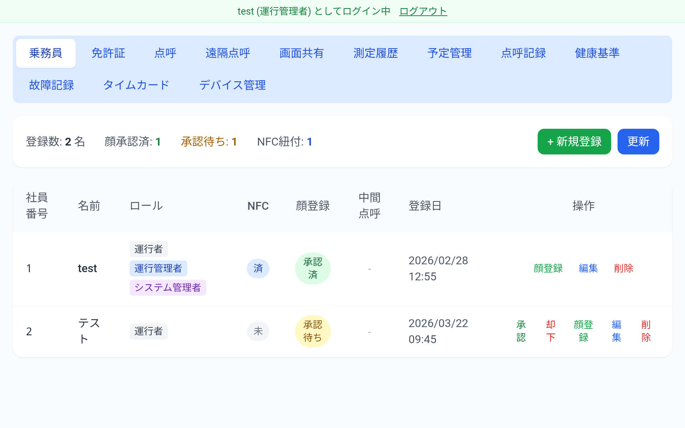
| ステータス | 内容 |
|---|---|
| 未登録 | 乗務員がまだ顔を登録していない |
| 承認待ち | 顔が登録され、管理者の承認を待っている |
| 承認済 | 管理者が顔登録を承認した |
承認待ちの乗務員には「承認」「却下」ボタンが表示されます。「承認」をタップすると、その乗務員の顔認証が有効になります。
デバイス管理¶
登録フロー¶
3種類の登録フローを提供します。
| フロー | 流れ | 承認 | 有効期限 |
|---|---|---|---|
| QR一時コード（推奨） | 管理者がQR生成 → 端末でスキャン → 即登録 | 不要 | 10分 |
| QR永久コード | 管理者がQR生成(PDF印刷可) → 端末でスキャン → 管理者が承認 | 必要 | なし |
| URL共有 | 管理者がURL生成 → LINE等で共有 → 端末で登録 | 不要 | 24時間 |
デバイス一覧¶
登録済みデバイスの一覧が表示されます。ステータス（有効 / 無効）、デバイス名、電話番号、登録日を確認できます。
承認・却下¶
QR永久フローで登録されたデバイスは「承認待ち」状態になります。「承認」または「却下」をクリックして処理します。
着信設定¶
デバイスごとに遠隔点呼の着信 ON/OFF とスケジュールを設定できます。
デバイスの無効化・削除¶
デバイスの「無効化」で一時的に利用を停止、「削除」で完全に削除できます。